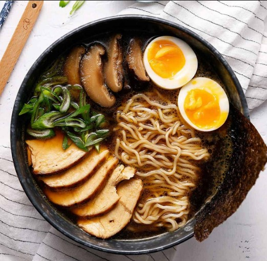

RAMEN

El ramen es una icónica y reconfortante especialidad culinaria
japonesa que consiste en una sopa de fideos sumergidos en un caldo sabroso y
aromático. Su importancia en Japón va más allá de ser simplemente una comida;
representa un vínculo cultural y un arte gastronómico que ha evolucionado a lo
largo de décadas. El ramen es un elemento esencial de la vida diaria,
con una amplia variedad de estilos regionales y tipos de caldo que reflejan la diversidad culinaria de Japón.
Ingredientes
- Fideos de trigo
- Caldo de tonkotsu (huesos de cerdo cocidos)
- Caldo de shoyu (salsa de soja)
- Caldo de miso (pasta de soja fermentada)
- Chashu (cerdo cocido a fuego lento)
- Huevo cocido a baja temperatura
- Alga nori
- Brotes de bambú
- Cebolla verde
- Setas
Como preparar Ramen
- Cocina los fideos: Hierve agua y cocina los fideos de ramen hasta que estén al dente. Escúrrelos y enjuágalos con agua fría.
- Prepara el caldo: Calienta el caldo de tu elección (tonkotsu, shoyu, miso) en una cacerola, asegurándote de que esté bien caliente pero no hirviendo.
- Añade condimentos: Agrega salsa de soja, mirin o miso al caldo para darle sabor. Ajusta según tu preferencia.
- Prepara los ingredientes: Cocina el chashu (cerdo cocido), el huevo a baja temperatura y corta la cebolla verde y las setas.
- Arma el plato: Coloca los fideos cocidos en un tazón grande, vierte el caldo caliente y dispón los ingredientes preparados encima.
- Decora y sirve: Agrega alga nori, brotes de bambú y cualquier otro ingrediente adicional que desees. ¡Listo para disfrutar!